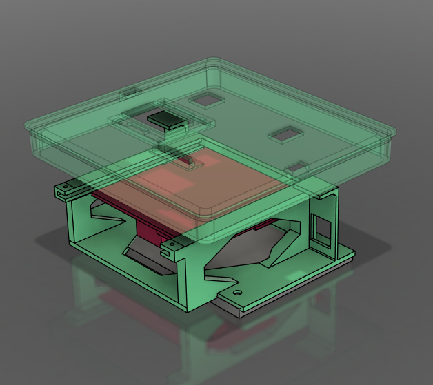
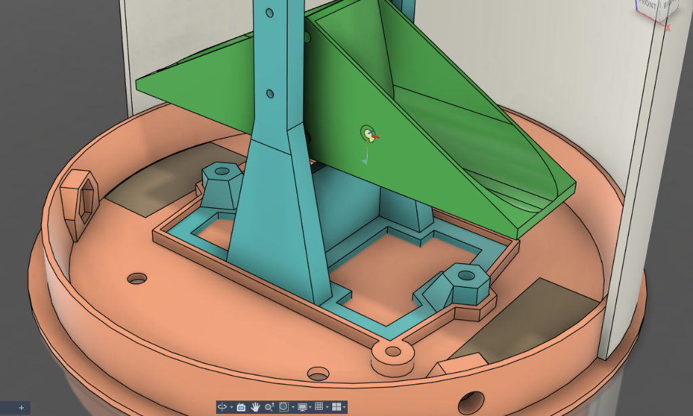
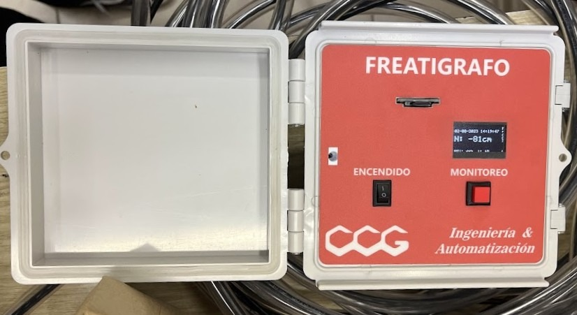

Desarrollo para Monitoreo Ambiental: Freatígrafo y Pluviómetro
El Desafío
Desarrollar un pluviómetro y un freatígrafo de bajo costo para su despliegue operativo en campos y reservas ecológicas. El proyecto requirió la integración física de hardware y electrónica fabricada a medida en el ámbito universitario. La meta consistió en diseñar soportes personalizados para paneles solares y adaptadores para interfaces de usuario (pantallas y botoneras), asegurando su correcto funcionamiento dentro de cajas estancas.

Desarrollo CAD
El diseño se ejecutó bajo especificaciones estrictas del equipo de ingeniería, respetando la ubicación exacta requerida para cada componente. El reto técnico se centró en la optimización extrema del espacio interno de la caja estanca. Se modelaron estructuras a medida para alojar placas (PCBs) de diseño propio, baterías, cableado y periféricos comerciales, garantizando una fijación absoluta que evite vibraciones o movimientos durante el traslado y la operación en campo. Al trabajar dentro de un volumen hermético controlado, las tolerancias se orientaron a la inmovilización del hardware más que a la estanqueidad.

Prototipado y Fabricación
La totalidad de las piezas se fabricó utilizando filamento PETG, seleccionado por su estabilidad térmica y resistencia mecánica. El modelado CAD se optimizó estratégicamente para el proceso de manufactura aditiva: los grosores se calcularon para que la laminación genere piezas macizas construidas exclusivamente a base de perímetros (múltiples paredes externas), eliminando el uso de patrones de relleno (infill) y maximizando la solidez estructural de los anclajes.

Resultado y Uso
Los alojamientos y soportes 3D se encuentran 100% operativos en el entorno real, cumpliendo exitosamente la función de proteger y organizar la instrumentación. Los dispositivos continúan funcionando en campo y el proyecto atraviesa una fase de expansión enfocada en la calibración de software, manteniendo intacta la base de hardware y la estructura de diseño original.
